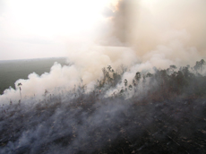

<!DOCTYPE html PUBLIC "-//W3C//DTD XHTML 1.0 Transitional//EN" "http://www.w3.org/TR/xhtml1/DTD/xhtml1-transitional.dtd">
<html xmlns="http://www.w3.org/1999/xhtml">
<head>
<meta http-equiv="Content-Type" content="text/html; charset=iso-8859-1" />
<title>Natural Capital Project - Sumatra</title>
<link href="../css/ncp_main.css" rel="stylesheet" type="text/css" />
<link href="../css/navmenu.css" rel="stylesheet" type="text/css" />
<link href="../images/favicon.gif" rel="shortcut icon" type="image/gif" />
<script type="text/javascript" src="../scripts/dropmenu.js" language="javascript"></script>
<script type="text/javascript" src="../scripts/poste.js" language="javascript"></script>
</head>
<body>
<div id="spacer"></div>
<div id="container">
  <div id="banner"> <a href="/"><i>Home</i></a> </div>
<!-- #BeginLibraryItem "/navmenu.lbi" -->
<!--#include virtual="../inc/navLone.html" -->
<!-- #EndLibraryItem --><div id="breadcrumb"><a href="/">Home</a> &gt;&gt; <a href="wherewework.html">Where We Work</a> &gt;&gt; Sumatra, Indonesia</div>
  <div id="content">
    <div id="left_column_4">
      <div id="left_nav">
        <h2>Sumatra, Indonesia</a></h2>
	    <ul>
        		  <li style="margin-bottom:5px"><a href="#Land-use">Sustainable Land-use Plan</a></li>
		  <li style="margin-bottom:5px"><a href="#Partners">Mapping Environmental Services</a></li>
          <li style="margin-bottom:5px"><a href="#Historic">Comittment to Conservation</a></li>
          <li style="margin-bottom:5px"><a href="#Roadmap">A Green Vision for Sumatra</a></li>
          <li style="margin-bottom:5px"><a href="#HWB">Human Wellbeing</a></li>
          <li style="margin-bottom:5px"><a href="#Results">Results</a></li>
          <li style="margin-bottom:5px"><a href="#Publications">Publications</a></li>
	      <li style="margin-bottom:5px"><a href="#Links">Links</a></li>
		  <li style="margin-bottom:10px"><a href="#Contact">Contact</a></li>
        </ul>
        
<br />

<h2>Sumatra Brochure</h2>
<ul>
<li style="margin-bottom: 10px;"><a href="../pubs/Sumatra_Brochure.pdf"></a></a></li>
<li style="margin-bottom: 10px;"><p> A brief overview of our work in Sumatra (<a href="../pubs/Sumatra_Brochure.pdf">view pdf</a>)</p></li> </ul>
<br />

<h2>InVEST Scenarios Case Study: Sumatra, Indonesia</h2>
<ul>
<li style="margin-bottom: 10px;"><a href="../pubs/Sumatra_Brochure.pdf"></a></a></li>
<li style="margin-bottom: 10px;"><p>An overview of how scenarios were used for land-use decision making in Sumatra (<a href="../pubs/Sumatra_CS.pdf">view pdf</a>)</p></li> </ul>
<br />

<h2>A Green Vision for Sumatra</h2>
<ul>
<li style="margin-bottom: 10px;"><a href="http://130.211.163.122/~dataportal/pubs/Sumatra%20InVEST%20report%20combined%20Feb%202012_final.pdf"></a></a></li>
<li style="margin-bottom: 10px;"><p>A Green Vision for Sumatra: Using ecosystem services information to make recommendations for sustainable land use planning at the provice and district level <a href='http://130.211.163.122/~dataportal/pubs/Sumatra%20report_report%20summary_final%20unformatted.pdf'>[Summary]</a> <a href='http://130.211.163.122/~dataportal/pubs/Sumatra%20InVEST%20report%20combined%20Feb%202012_final.pdf'>[Full PDF]</a>  <a href='http://gis.wwf.or.id/wwf/index.php/visi-hijau-untuk-sumatera-aplikasi-alat-pemodelan-invest-integrated-valuation-of-ecosystem-services-and-tradeoffs/#more-1639'>[Bahssa Translation] </a></p></li> </ul>
<br />
		<h2>Ecosystem Services</h2>
        <ul style="margin-top:5px"
         ><li style="margin-bottom:5px"><b>Carbon Storage & Sequestration</b><br />About 12 million hectares of forest on Sumatra have been cleared in the past 22 years, a loss of nearly 50%. Forest carbon projects in Central Sumatra's peat swamps and upland forests offer global climate benefits, and support Indonesia's goal to reduce carbon emissions by 26% from 2005 -2020. Over 50 years, the Sumatra Vision will replenish 350 million tons of carbon stock, while the current government plan would result in net carbon loss.</li
         ><br /><li style="margin-bottom:5px"><b>Biodiversity</b><br />Sumatra's tropical rainforests are home to many endangered species of animals including Sumatran tigers, elephants, orangutans and rhinoceroses. They also harbor over 15,000 known species of plants.</li><br />
         <li style="margin-bottom:5px"><b>Hydropower</b><br />Hydropower is an important source of electricity in the region. Healthy forests upstream can reduce sedimentation in the rivers and limit the amount of dredging required at the hydropower facility.</li><br />
           <li style="margin-bottom:5px"><b>Water Quality & Quantity</b><br />InVEST models can map and value the water supply to a region, which is critically important to human health as well as to agricultural production in Sumatra. </li> <br />      
        </ul>
      </div>
    </div>
    <div id="story_4">
      <h1>Land-Use Planning in Central Sumatra</h1>
	  <br />
      <div class="photo_right"></div>
	  <p>The Natural Capital Project (NatCap) is working with WWF and other partners to integrate natural capital valuation into spatial plans guiding development and conservation on the island of Sumatra in Indonesia.  Some planning options devised with the input of InVEST models result in higher carbon stocks, reduced sedimentation, cleaner water, and greatly enhanced habitat quality, while also providing land for forestry and oil palm production. As a result of this work, the Millennium Challenge Corporation is promoting comprehensive ecosystem service assessments, such as those conducted with InVEST, as a way to direct millions of dollars in forest investments to reduce greenhouse gas emissions.</p>
<br />

<a name="Land-use" id="Land-use"><h2>Building a sustainable land-use plan for Sumatra</h2>
<br /></a>
<p>Working with Indonesian government agencies and local NGOs, NatCap supported WWF-Indonesia in helping district and provincial governments of central Sumatra consider ecosystem services in their land-use plans. Rapid proliferation of palm oil plantations and commercial forestry requires government officials in Sumatra to balance tradeoffs in revenues and livelihoods from these industries with their impact on nature's other benefits to human well-being. Sumatra's forests and peatlands store huge amounts of carbon, produce essential foods and medicines, purify water supplies, and provide habitats that maintain biodiversity among species of global consequence. By analyzing the impact of development activities on resources of interest, government agencies in Indonesia can generate long-term plans to maintain these critical ecosystem services.</p>
<br />
<a name="Partners" id="Partners"><h2>Local partners invited to map environmental services for land use plans on Sumatra</h2>
<br /></a><p>
WWF-Indonesia has been invited to contribute to the land-use planning process in several provinces and districts on Sumatra (Aceh, Jambi, Lampung, Riau, West Sumatra) by modeling environmental services under current and alternative future land use scenarios. This has the potential to inform decisions relating to extractive industry projects – such as paper, pulp and palm oil, which can lead to deforestation, significant degradation of environmental services, and loss of biodiversity in Indonesia's conservation priority areas. Mapping and valuing environmental services can provide incentives to manage conservation priority areas sustainably and to restore degraded habitats.
</p>
<div class="photo_right"> </div>
<p>
The resulting maps and analyses will be used as government-sanctioned land-use planning tools, and may also be used for advocacy, outreach to the public and media, and to identify districts within these provinces that offer potential for Payment for Ecosystem Services (PES) programs. 
</p>
<p>
Many areas that were zoned for conservation under the new national land use plan had previously been designated as concessions for timber, pulp, palm oil and other economic uses, and these concessions are often in effect for many years to come, regardless of any recent conservation designation, thus there is a strong need for incentives to prevent these concessions from being put into use, which is where PES could be relevant. Water and carbon are the key services, along with haze (from forest fire) reduction. 
</p>
<br />
<a name="Historic" id="Historic"><h2>Historic commitment to conservation on Sumatra</h2></a>
<div class="photo_right"> </div>
<p>In Indonesia, district and provincial spatial plans specify where timber harvest, plantation expansion, infrastructure development, and conservation should take place. In 2010, the 10 governors of Sumatra made an island-wide commitment to conduct ecosystem-based spatial planning, which supports sustainable development and conservation. The plan addresses environmental, climate, and livelihood concerns and also identifies critical areas for biodiversity and peatland conservation. Six national government agencies and a forum of NGOs developed an ecosystem vision for Sumatra as an alternative to the existing government spatial plans. World Wildlife Fund used the Natural Capital Project's InVEST (Integrated Valuation of Environmental Services and Tradeoffs) software to inform the new plan by modeling climate storage and sequestration, water quality and quantity, and habitat quality for biodiversity in priority areas on the island of Sumatra. InVEST also identified tradeoffs and synergies among multiple services and economic activities. </p>
<br />

<a name="Roadmap" id="Roadmap"></a><h2>A Green Vision for Sumatra</h2>

<a href='http://130.211.163.122/~dataportal/pubs/Sumatra%20InVEST%20report%20combined%20Feb%202012_final.pdf'><div class="photo_right"> </div> </a> <p>The Indonesian government selected 19 districts and six main watersheds to initiate programs aimed to restore the delivery of ecosystem services. Using InVEST software, habitat for tigers and multiple ecosystem services were assessed for the region, including carbon storage, water yield, erosion control and avoided nutrient pollution. Spatial and economic analyses of these areas informed conservation management objectives for provincial and district planners.</p>

<p>In February 2012, the Natural Capital Project and WWF published a new report, the first of its kind, which uses ecosystem services information from InVEST to make recommendations for sustainable land use planning and prioritizing incentives for ecosystem service provision in central Sumatra. <a href='http://130.211.163.122/~dataportal/pubs/Sumatra%20InVEST%20report%20combined%20Feb%202012_final.pdf'><em> A Green Vision for Sumatra</em></a> was led by Dr. Nirmal Bhagabati. The report demonstrates how spatial and economic analyses of ecosystem services and wildlife habitat can support provincial and district planning in Indonesia.</p>

<p>By assessing the benefits from nature that the people of Sumatra manage and depend on, the report identifies the full costs and benefits of alternative future development trajectories. Its results are drawn from comparison of Sumatra's landscape in 2008 with a possible business-as-usual future and an "Ecosystem Vision for Sumatra." The report includes summary includes detailed methods for InVEST users, as well as policy recommendations for the Indonesian government and international agencies, such as the Millennium Challenge Corporation. </p>

<p>The report has been translated into Bahasa and is now being shared with provincial and district land-use planners. The results are informing a strategic environmental assessment for the region.</p>
<br />
<a name="HWB" id="HWB"></a><h2>Connecting ecosystem services to human well-being in Indonesia</h2>
<p>Indonesia has completed a national spatial plan for future infrastructure investment, including the development of ports and highways to support expanding industries (e.g. palm oil). NatCap and WWF are supporting province and district spatial planning in Jambi Province by estimating how changes in land designation and management could impact ecosystem services and local well-being. With partners at Duke University, we investigated how these changes could affect villages at different levels of wealth and poverty. These efforts are conducted with the generous support of the Rockefeller foundation. </p>
<br />

<a name="Results" id="Results"></a><h2>Results</h2>
<ul/>
<li style="margin-bottom:10px"><b>Developed framework for ecosystem-based spatial plan:</b> InVEST maps and associated analyses have informed spatial planning decisions in several provinces in Sumatra, such as Jambi, and a Strategic Environmental Assessment for the region.</li>
<li style="margin-bottom:10px"><b>Identified alternatives for land management:</b> Our research offers practical options to safeguard natural capital. Analyses also provide planners with information they need to target districts for conservation and development activities.
<li style="margin-bottom:10px"><b>Provided clear-cut guidance for decision makers:</b> Our results suggest that implementing the Sumatra Vision will result in higher carbon stocks, reduced sedimentation, cleaner water, and greatly enhanced habitat quality. The Millennium Challenge Corporation (MCC) recently signed a Compact Agreement with the Indonesian government to fund $600 million for projects for sustainable development and offsetting carbon emissions. The MCC recommend in their call for proposals that ecosystem service assessments, such as the one conducted with InVEST, be used to guide priorities for the first investments.</li>
<li style="margin-bottom:10px"><b>Received public support for the Sumatra Ecosystem Vision,</b> which has been endorsed by the Indonesian Ministry of the Environment, Ministry of Public Works, Ministry of Forestry, and Ministry of Home Affairs. </li>

</ul>

<br />
<a name="Publications" id="Publications"></a><h2 style="margin: 10px 0 0 0">Publications</h2>
<br />
<p><a href="http://www.sciencedirect.com/science/article/pii/S0006320713003893">Ecosystem services reinforce Sumatran tiger conservation in land use plans</a><br/>Bhagabati, Nirmal K.; Taylor Ricketts; Thomas Barano Siswa Sulistyawan; Marc Conte; Driss Ennaanay; Oki Hadian; Emily McKenzie; Nasser Olwero; Amy Rosenthal; Heather Tallis;  Stacie Wolny<br/>
<i>Biological Conservation. January 2014, Vol. 169, pp 147–156.</i></p>
<br />
<a href='http://130.211.163.122/~dataportal/pubs/Sumatra%20InVEST%20report%20combined%20Feb%202012_final.pdf'><div class="photo_right"> </div> </a>      <p>A Green Vision for Sumatra: Using ecosystem services information to make recommendations for sustainable land use planning at the provice and district level <a href='http://130.211.163.122/~dataportal/pubs/Sumatra%20report_report%20summary_final%20unformatted.pdf'>[Summary]</a> <a href='http://130.211.163.122/~dataportal/pubs/Sumatra%20InVEST%20report%20combined%20Feb%202012_final.pdf'>[Full PDF]</a>  <a href='http://gis.wwf.or.id/wwf/index.php/visi-hijau-untuk-sumatera-aplikasi-alat-pemodelan-invest-integrated-valuation-of-ecosystem-services-and-tradeoffs/#more-1639'>[Bahssa Translation] </a><br/>Bhagabati, Nirmal; Thomas Barano; Marc Conte; Driss Ennaanay; Oki Hadian; Emily McKenzie; Nasser Olwero; Amy Rosenthal; Suparmoko; Aurelie Shapiro; Heather Tallis; Stacie Wolny<br/><em>February 2012.</em></p>
      <br />
      <p><a href="../pubs/Jambi_CS_poverty_ES.pdf">Ecosystem services and human well-being: A Case Study in Jambi Province, Sumatra, Indonesia</a><br/>Binder, Seth; Amy Rosenthal; Daniela Miteva; Subhrendu Pattanayak; Justin Johnson; Rebecca Traldi; Michael Anderson; Derric Pennington; Nirmal Bhagabati<br/><em>Case Study. 2013.</em></p>
      <br />
<p><a href="../pubs/rimba_factsheet.pdf" target="_blank">Integrated Valuation of Environmental Services and Tradeos Application
in RIMBA Integrated Ecosystem Area, Sumatra, Indonesia Factsheet</a><br/><i>Save Sumatra. 2010.</i></p>
<br />
<p><a href="../pubs/NatCap_Indonesia_Sumatra_TEEBcase_2010.pdf" target="_blank">Integrating Ecosystem Services into Spatial
Planning in Sumatra, Indonesia
</a><br/>Barano, Thomas; Emily McKenzie; Nirmal Bhagabati; Marc Conte;
Driss Ennaanay; Oki Hadian; Nasser Olwero; Heather Tallis; Stacie
Wolny; Ginny Ng<br/><i>TEEBcase. 2010.</i> Download from <a href="http://www.eea.europa.eu/teeb/integrating-ecosystem-services-into-spatial.pdf" target="_blank">www.eea.europa.eu/teeb</a>

</p>
<br />
<p><a href="../pubs/Valencia_Haze_Indonesia_UnivMD_2009.pdf" target="_blank">Clearing the haze and seeing the forest:
A proposal of economic incentives and financial mechanisms to combat
deforestation, fires and haze in Indonesia</a><br/>Iván Darío Valencia<br/>Not Peer-reviewed: <i>Scholarly Paper for Graduate
Studies. University of Maryland. August 2009.</i></p>
<br />
      <p><a href="../pubs/Sumatraincentiveframework.pdf" target="_blank">A Framework of Incentives: Supporting Implementation of Indonesia's Spatial Plans
</a> (Barano and McKenzie 2009)</p>
<br/>
<p><a href="../pubs/Sumatra_CS.pdf" target="_blank">InVEST Scenarios Case Study: Sumatra, Indonesia
</a>
<br/>
<br />
<a name="Links" id="Links"></a><h2 style="margin: 10px 0 0 0">Links</h2>
<br />
	  <p><a href="http://wwf.panda.org/what_we_do/where_we_work/sumatra/" target="_blank">WWF-Sumatra</a></p>
        <p><a href="http://www.wwf.or.id/en/about_wwf/whoweare/" target="_blank">WWF-Indonesia</a></p>
        <p><a href="http://www.worldwildlife.org/what/wherewework/borneo/index.html" target="_blank">WWF-Borneo and Sumatra</a></p>
        <p><a href="http://www.savesumatra.org" target="_blank">Save Sumatra</a></p>
		<br />
<a name="Contact" id="Contact"></a>    <h2 style="margin: 10px 0 0 0">Contact</h2>
	  <br />
<p><span class="name">Nirmal Bhagabati</span></p>
  <p>Senior Program Officer</p>
    
<a href="mailto:woodsp@stanford.edu ">nirmal.bhagabati@wwfus.org</a>
        <p></p>
        <br />
    </div>
  </div>
  <div id="footer">© Stanford Woods Institute
for the Environment, University of
Minnesota's Institute on the Environment, The Nature Conservancy, World
Wildlife Fund.</div>
</div>
<script type="text/javascript"> var gaJsHost = (("https:" == document.location.protocol) ? "https://ssl." : "http://www."); document.write(unescape("%3Cscript src='" + gaJsHost + "google-analytics.com/ga.js' type='text/javascript'%3E%3C/script%3E")); </script> <script type="text/javascript"> var pageTracker = _gat._getTracker('UA-24933546-1'); pageTracker._trackPageview(); </script></body>
</html>
